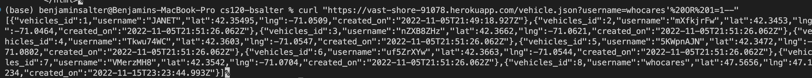
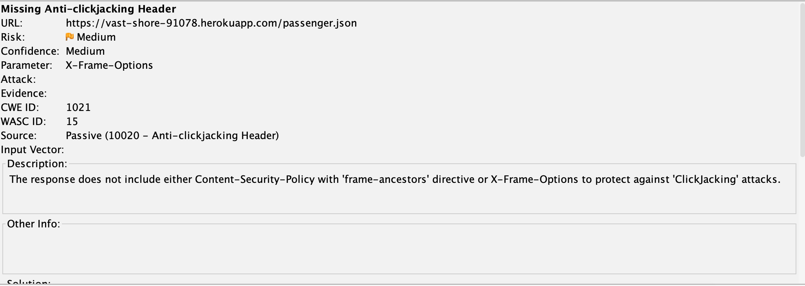

Introduction
I was hired to provide a security assessment of a back-end written in Node.js. The task is to uncover and report on any
security or privacy vulnerabilities that I discover as a result of auditing the source code. The client believes there are at least
three potential vectors of attack, although more may be present.
OWASP Top Ten vulnerabilities are highest priority, particularly SQL injection vectors.
Methodology
Prior to investigating code, I used black-box testing to search for likely vulnerabilities.
Subsequent to black-box testing, the primary mode of insepction is an in-depth, line-by-line code audit,
backed up by sending curl requests to verify findings. The code was deployed to a Heroku cloud server for testing.
Finally, the OWASP ZAP tool was used to determine if there are problems with headers that could expose the server.
Abstract of Findings
Three very significant problems were found when investigating this back-end code, which could open the system to attack
and potentially your company to a lawsuit. In brief, it is currently possible for an attacker to damage your database,
download private passenger data, or 'fake' your site to steal your customer's data. We suggest remediating these problems
immediately, as they are non-complex and could be rectified in under a day's typical work period.
Issues Found
-
- Issue: SQL Injection vulnerability
- Location: line 90
- Severity: Critical, arbitrary SQL can be run against the server
-
Description: A SQL injection vulnerability exists in the GET vehicle.json endpoint which would allow
hackers to run their own SQL queries against the database. They could potentially use this to erase or
alter records. Found this issue during code-audit and using the curl command.
- Proof: 
- Resolution: Change this query to use a 'prepare'-style, similar to lines 29 & 56.
-
- Issue: GPS coords of users are saved to database
- Location: line 29
- Severity: Severe, because passenger data can currently be downloaded
-
Description: This is a privacy issue - user details are sent to the database and saved there, with no encryption.
Found this issue when examining the database and during code audit.
- Proof:

-
Resolution: Encrypt user details like lat/lng coordinates. Institute a policy of deleting this sensitive
data periodically.
-
- Issue: Missing Headers
- Location: All endpoints
- Severity: Medium, opens the door to possible click-jacking possibility
-
Description: The header Content-Security-Policy with 'frame-ancestors' directive or X-Frame-Options is missing from
the header, which opens the door to possible click-jacking attacks. See:
https://owasp.org/www-community/attacks/Clickjacking
Found this issue while running the OWASP ZAP tool.
- Proof: 
- Resolution: Add this header to all server responses.
Conclusion
Several very-high vulnerabilities exist on your site. We recommend you assign a skilled developer to repair these deficiencies
before a hacker or other unscrupulous individual discovers them. In particular, the opportunity to download passenger lat/lng
locations is concerning.
I would anticipate the price of repairing these vulnerabilities to be < $1000, depending on software developer rates and cost to
deploy.